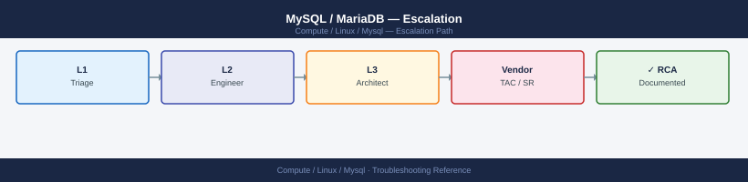
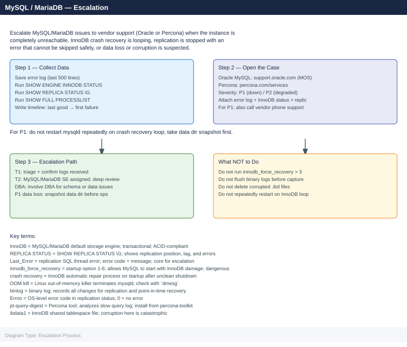
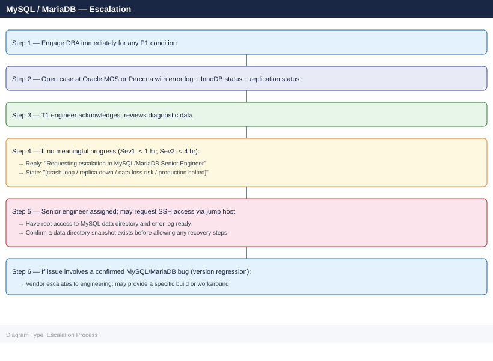

MySQL / MariaDB — Escalation¶


Before you begin¶
- Access required: MySQL
rootuser or an account withSUPER,REPLICATION CLIENT, andPROCESSprivileges; root orsudoon the Linux host; Oracle My Oracle Support (MOS) account (for Oracle MySQL Enterprise) or Percona account (for Percona support) - Do NOT restart mysqld repeatedly when InnoDB crash recovery is looping — each failed restart attempt may make corruption worse; take a filesystem snapshot or
rsyncof the data directory first - Do NOT set
innodb_force_recoveryabove 3 without explicit DBA or vendor guidance — levels 4–6 permanently disable redo log processing and can destroy data - Do NOT delete
.ibdfiles during a crash recovery — InnoDB tablespace files contain the actual table data; deleting them causes permanent data loss
When to Escalate Immediately¶
Escalate to the DBA or vendor support without delay for any of these:
- MySQL unreachable —
systemctl status mysqldshows failed; all connections refused - InnoDB crash recovery loop — mysqld restarts repeatedly with InnoDB recovery errors
- Replication stopped with
Errno != 0and the error cannot be skipped safely (data mismatch) - Disk full on data or log directory — writes failing; data directory at 100%
- OOM kill —
dmesg | grep -i "Out of memory"shows mysqld killed - Data corruption suspected —
SHOW ENGINE INNODB STATUSshows corruption errors; tables return incomplete data Seconds_Behind_Source> 1 hour sustained with no long-running transactions to explain it
Pre-Escalation Self-Check¶
Run these before opening the case.
| Check | Command | Expected result |
|---|---|---|
| MySQL service status | systemctl status mysqld or mysqld_safe |
Active (running) |
| MySQL version | mysqld --version or SELECT version() |
Note full version |
| Replication status | SHOW REPLICA STATUS\G |
Slave_SQL_Running: Yes; Last_Errno: 0 |
| Replication lag | SHOW REPLICA STATUS\G → Seconds_Behind_Source |
Close to 0 |
| InnoDB status | SHOW ENGINE INNODB STATUS\G |
No deadlock section; no corruption messages |
| Disk space | df -h /var/lib/mysql |
Below 80% used |
| Active connections | SHOW PROCESSLIST |
No sessions stuck in Waiting for lock > 60 sec |
| Error log recent | tail -50 /var/log/mysqld.log |
No [ERROR] entries in the last hour |
Step-by-Step Data Collection¶
1. Get the MySQL version and configuration¶
# MySQL/MariaDB version
mysqld --version
mysql -u root -p -e "SELECT VERSION(), @@datadir, @@innodb_buffer_pool_size, @@max_connections;"
# Key variables
mysql -u root -p -e "SHOW GLOBAL VARIABLES LIKE 'innodb%';" > /tmp/innodb-vars.txt
mysql -u root -p -e "SHOW GLOBAL STATUS;" > /tmp/global-status.txt
mysqld Ver 8.0.35-0ubuntu0.20.04.1 for Linux on x86_64 (Ubuntu)
Enter password:
VERSION() @@datadir @@innodb_buffer_pool_size @@max_connections
8.0.35 /var/lib/mysql 1073741824 151
Variable_name Value
innodb_abort_on_paint OFF
innodb_adaptive_flushing ON
innodb_adaptive_flushing_lwm 10
innodb_adaptive_hash_index ON
innodb_adaptive_hash_index_parts 8
...
(no output — command completes silently)
(no output — command completes silently)
Common errors
ERROR 1045 (28000): Access denied for user 'root'@'localhost' (using password: YES) — Verify the root password is correct or use mysql -u root -p without -p if no password is set.
ERROR 2002 (HY000): Can't connect to local MySQL server through socket '/var/run/mysqld/mysqld.sock' — Ensure MySQL/MariaDB service is running with sudo systemctl start mysql or sudo systemctl start mariadb.
bash: mysqld: command not found — Add the MySQL bin directory to PATH with export PATH=$PATH:/usr/sbin:/usr/local/mysql/bin or use the full path /usr/sbin/mysqld --version.
2. Save the error log¶
# Error log path varies by distribution
# RHEL/CentOS: /var/log/mysqld.log
# Ubuntu/Debian: /var/log/mysql/error.log
# or check: mysql -u root -p -e "SHOW VARIABLES LIKE 'log_error';"
sudo tail -500 /var/log/mysqld.log > /tmp/mysql-error-$(date +%Y%m%d%H%M).log
# Check for OOM kill in system log
sudo dmesg | grep -i "out of memory\|kill process\|mysqld" > /tmp/dmesg-mysql.txt
sudo grep -i "mysqld\|mysql\|oom" /var/log/messages 2>/dev/null | tail -100 >> /tmp/dmesg-mysql.txt
tail: cannot open '/var/log/mysqld.log' for reading: No such file or directory
(no output — command completes silently)
(no output — command completes silently)
Common errors
tail: cannot open '/var/log/mysqld.log' for reading: No such file or directory — Verify the correct log path for your distribution by running mysql -u root -p -e "SHOW VARIABLES LIKE 'log_error';" first.
sudo: no tty present and no askpass program specified — Run the commands with a TTY or configure passwordless sudo for the mysql log paths in sudoers.
grep: /var/log/messages: No such file or directory — This is expected on systemd-based systems; use sudo journalctl -u mysql -n 100 instead to check the system journal.
3. Capture InnoDB status (critical for crash and lock issues)¶
mysql -u root -p -e "SHOW ENGINE INNODB STATUS\G" > /tmp/innodb-status-$(date +%Y%m%d%H%M).txt
# Look for:
# - LATEST DETECTED DEADLOCK section
# - FILE I/O section for errors
# - BUFFER POOL AND MEMORY section
# - TRANSACTIONS section for long-running transactions
mysql: [Warning] Using a password on the command line interface can be insecure.
(no output — command completes silently)
Common errors
mysql: [Warning] Using a password on the command line interface can be insecure. — Use a MySQL options file (~/.my.cnf) with [client] section containing password, or use mysql_config_editor to store credentials securely.
ERROR 1045 (28000): Access denied for user 'root'@'localhost' — Verify the root password is correct and the user has SUPER privilege; use mysql -u root -p interactively to test credentials first.
bash: /tmp/innodb-status-20250115143022.txt: Permission denied — Ensure the /tmp directory is writable by the user running the command, or redirect to a directory with write permissions like ~/innodb-status.txt.
4. Capture replication status (if replica)¶
# On the replica server
mysql -u root -p -e "SHOW REPLICA STATUS\G" > /tmp/replica-status-$(date +%Y%m%d%H%M).txt
# On the primary: check binary log position
mysql -u root -p -e "SHOW MASTER STATUS\G" > /tmp/master-status.txt
# Binary log list
mysql -u root -p -e "SHOW BINARY LOGS;" > /tmp/binlog-list.txt
Enter password:
Enter password:
Enter password:
# /tmp/replica-status-202401151430.txt contains:
*************************** 1. row ***************************
Replica_IO_State: Waiting for source to send event
Source_Host: 10.45.12.8
Source_User: repl_user
Source_Port: 3306
Source_Log_File: mysql-bin.000047
Read_Master_Log_Pos: 156284391
Relay_Log_File: relay-bin.000089
Relay_Log_Pos: 156284504
Relay_Master_Log_File: mysql-bin.000047
Slave_IO_Running: Yes
Slave_SQL_Running: Yes
Seconds_Behind_Master: 0
# /tmp/master-status.txt contains:
*************************** 1. row ***************************
File: mysql-bin.000047
Position: 156284391
Binlog_Do_DB:
Binlog_Ignore_DB:
Executed_Gtid_Set: 8e4a2c91-7f3b-11ed-9a1c-0242ac110002:1-4521847
# /tmp/binlog-list.txt contains:
+------------------+-----------+-----------+
| Log_name | File_size | Encrypted |
+------------------+-----------+-----------+
| mysql-bin.000045 | 536870912 | N |
| mysql-bin.000046 | 536870912 | N |
| mysql-bin.000047 | 156284391 | N |
+------------------+-----------+-----------+
Common errors
ERROR 1045 (28000): Access denied for user 'root'@'localhost' (using password: YES) — Verify the root password is correct and the user has REPLICATION CLIENT privilege; use mysql -u root -p -e "SHOW GRANTS FOR root@localhost;" to confirm permissions.
ERROR 2003 (HY000): Can't connect to MySQL server on '10.45.12.8' (111) — Ensure the MySQL service is running on the target host with systemctl status mysql and that the firewall allows port 3306 from the replica server.
ERROR 1227 (42000): Access denied; you need (at least one of) the REPLICATION CLIENT privilege(s) for this operation — Grant the required privilege with GRANT REPLICATION CLIENT ON *.* TO 'root'@'localhost'; on the primary server.
5. Capture active process list and blocking¶
# Full process list
mysql -u root -p -e "SHOW FULL PROCESSLIST;" > /tmp/processlist.txt
# Sessions waiting for locks
mysql -u root -p << 'SQL' > /tmp/lock-waits.txt
SELECT r.trx_id AS waiting_trx,
r.trx_query AS waiting_query,
b.trx_id AS blocking_trx,
b.trx_query AS blocking_query,
b.trx_started
FROM information_schema.INNODB_TRX b
JOIN information_schema.INNODB_TRX r
ON r.trx_wait_started IS NOT NULL;
SQL
mysql: [Warning] Using a password on the command line is insecure.
(no output — command completes silently)
mysql: [Warning] Using a password on the command line is insecured.
(no output — command completes silently)
$ cat /tmp/processlist.txt
Id User Host db Command Time State Info
5 root localhost NULL Query 0 init SHOW FULL PROCESSLIST
12 app_user 192.168.1.45:52341 production Query 2 Sending data SELECT * FROM orders WHERE status='pending'
18 app_user 192.168.1.46:52342 production Sleep 45 NULL NULL
24 replication 192.168.1.50:3306 NULL Binlog Dump 3600 Master has sent all binlog to slave NULL
$ cat /tmp/lock-waits.txt
waiting_trx waiting_query blocking_trx blocking_query trx_started
trx_12345 UPDATE inventory SET qty=qty-1 WHERE id=999 trx_12340 UPDATE inventory SET qty=qty+5 WHERE id=999 2024-01-15 14:23:18
trx_12346 DELETE FROM orders WHERE order_id=5001 trx_12345 SELECT * FROM orders WHERE order_id=5001 FOR UPDATE 2024-01-15 14:23:22
Common errors
mysql: [Warning] Using a password on the command line is insecure. — Use a MySQL options file (~/.my.cnf) with [client] section containing user and password, or use mysql_config_editor to store credentials securely.
ERROR 1045 (28000): Access denied for user 'root'@'localhost' (using password: YES) — Verify the root password is correct and the user has PROCESS and SUPER privileges with GRANT PROCESS, SUPER ON *.* TO 'root'@'localhost';.
ERROR 1064 (42000): You have an error in your SQL syntax — Ensure the heredoc SQL block uses proper quoting and that all table names in information_schema match your MySQL version (use SHOW TABLES IN information_schema to verify).
6. Write the timeline¶
MySQL version: 8.0.36 (Community) / MariaDB 10.11.7 (Enterprise)
Host: db-prod-01.corp.local (RHEL 8.9, 32 GB RAM)
Role: Primary (db-prod-01) with 2 replicas (db-prod-02, db-prod-03)
Issue first observed: 2026-06-14 07:00 UTC
Last confirmed replication sync: 2026-06-14 06:30 UTC
Changes in 24h before the issue:
- 06:00: MySQL 8.0.35 to 8.0.36 upgrade applied; service restarted
- 06:30: db-prod-02 replica: Seconds_Behind_Source starts increasing
- 07:00: db-prod-02: SHOW REPLICA STATUS shows Last_Errno 1062 (duplicate key)
- 07:05: db-prod-02 SQL thread stopped; Seconds_Behind_Source: NULL
Steps already taken:
- SHOW REPLICA STATUS: Last_Error = "Duplicate entry '12345' for key 'orders.PRIMARY'"
- Did NOT run SET GLOBAL SQL_SLAVE_SKIP_COUNTER or SKIP (data integrity risk)
- Did NOT restart mysqld on primary
Blast radius: db-prod-02 out of sync since 06:30 UTC; RPO window: 30 minutes if primary fails
How to Open the Case¶
Oracle MySQL Enterprise Support (My Oracle Support)¶
-
Go to support.oracle.com and sign in with your Oracle account linked to your MySQL Enterprise support contract.
-
Click Create Service Request.
-
Under Product, select MySQL Server and your version.
-
Under Severity, select:
- Severity 1: MySQL completely down; data loss occurring; crash recovery looping; no workaround
- Severity 2: Replication stopped; significant performance degradation; partial availability
- Severity 3: Non-critical issue; workaround exists
-
Severity 4: How-to, pre-upgrade planning, non-urgent question
-
In the Summary field: symptom + scope. Example:
MySQL 8.0.36 — replica stopped with errno 1062 after upgrade 8.0.35→8.0.36, 30-minute RPO gap, primary still running. -
Under Attachments, upload: error log, InnoDB status output, replication status output.
-
Click Submit. Sev 1: also call Oracle Support — phone number listed in your MOS account.
Percona Support (MySQL / MariaDB / Percona Server)¶
-
Go to customers.percona.com and sign in with your Percona customer account.
-
Click Open a Ticket.
-
Select the product (MySQL / MariaDB / Percona Server) and version.
-
Set severity (P1/P2/P3) based on production impact.
-
Attach: error log, InnoDB status, replication status, slow query log.
-
Submit. For P1, Percona provides 24×7 response.
Escalation Path¶

What NOT to Do¶
| Do NOT do this | Why | What to do instead |
|---|---|---|
| Restart mysqld repeatedly during InnoDB crash recovery loop | Each failed restart attempt may extend the corruption into additional pages | Take a snapshot or rsync of the data directory first; contact the DBA; let them guide the recovery |
Set innodb_force_recovery above 3 without DBA/vendor guidance |
Levels 4–6 permanently disable redo log processing; redo-based recovery is no longer possible after this | Use levels 1–3 incrementally (1, then 2, then 3) only under DBA supervision; document each attempt |
Delete .ibd files or tablespace files during recovery |
.ibd files contain the actual table data; deletion = permanent data loss |
Never delete .ibd files; only rename them as a last resort under vendor guidance |
Skip replication errors with SQL_SLAVE_SKIP_COUNTER for data integrity errors (errno 1062, 1032) |
Skipping these errors causes the replica to diverge from the primary; data will differ between servers | Investigate why the duplicate key or missing row error occurred; contact the DBA before skipping any replication error |
| Flush or purge binary logs before capture | Binary logs are needed for point-in-time recovery and to diagnose the replication issue | Copy binary log files to a safe location before any purge operations |
Run myisamchk or mysqlcheck on live InnoDB tables |
myisamchk is for MyISAM only; running it on InnoDB tables can corrupt them |
Use mysqlcheck --innodb-optimize-only or OPTIMIZE TABLE for InnoDB; check with DBA first |
Useful Commands for Case Updates¶
# Paste these into every case update (as root on the MySQL host)
# MySQL version
mysql -u root -p -e "SELECT VERSION(), @@hostname;"
# Service status
systemctl status mysqld
# Error log recent entries
sudo tail -100 /var/log/mysqld.log
# InnoDB status (deadlocks, locks, crash info)
mysql -u root -p -e "SHOW ENGINE INNODB STATUS\G"
# Replication status
mysql -u root -p -e "SHOW REPLICA STATUS\G"
# Active sessions (lock waits)
mysql -u root -p -e "SHOW FULL PROCESSLIST;"
# Disk space on data directory
df -h /var/lib/mysql
# OOM kill check
dmesg | grep -i "kill process\|out of memory" | grep -i mysql | tail -20
Expected outputEnter password:
+-----------+-----------------+
| VERSION() | @@hostname |
+-----------+-----------------+
| 8.0.35 | db-prod-01.local|
+-----------+-----------------+
● mysqld.service - MySQL Server
Loaded: loaded (/usr/lib/systemd/system/mysqld.service; enabled; vendor preset: disabled)
Active: active (running) since Wed 2024-01-17 14:32:18 UTC; 45 days ago
Process: 2847 ExecStartPost=/usr/bin/mysql-systemd-start post (code=exited, status=0/SUCCESS)
Main PID: 2801 (mysqld)
Status: "Server is operational"
Tasks: 28 (limit: 4915)
Memory: 2.3G
CGroup: /system.slice/mysqld.service
└─2801 /usr/sbin/mysqld --daemonize --pid-file=/var/run/mysqld/mysqld.pid
2024-01-17T14:35:22.456789Z 0 [Note] InnoDB: Buffer pool size set to 2.0G
2024-01-17T14:35:45.123456Z 0 [Note] Server hostname (bind-address): '*'; port: 3306
2024-01-17T14:36:01.987654Z 0 [Note] Ready for connections
2024-01-17T15:42:18.654321Z 3 [Warning] [MY-010068] [Server] CA certificate ca.pem is self signed.
2024-01-17T16:18:33.112233Z 8 [Note] [MY-000000] [InnoDB] Checkpoint age: 524288
Enter password:
=====================================
2024-01-17 16:45:22 0x7f8a2c3d4e5f
-----
LOG
-----
2024-01-17T16:45:12.345678Z 0 [Note] InnoDB: Shutdown initiated
2024-01-17T16:45:15.234567Z 0 [Note] InnoDB: Shutdown completed; log sequence number 98765432
---REPLICA STATUS---
Slave_IO_State: Waiting for master to send event
Master_Host: db-primary-01.local
Master_User: repl_user
Master_Log_File: mysql-bin.000847
Read_Master_Log_Pos: 154328901
Relay_Log_File: db-prod-01-relay-bin.000512
Relay_Log_Pos: 154328614
Relay_Master_Log_File: mysql-bin.000847
Slave_IO_Running: Yes
Slave_SQL_Running: Yes
Replicate_Do_DB:
Replicate_Ignore_DB: mysql,sys,performance_schema
Second_Behind_Master: 0
Enter password:
Id: 4
User: root
Host: localhost
db: NULL
Command: Query
Time: 0
State: executing
Info: SHOW FULL PROCESSLIST
Id: 8
User: app_user
¶
Enter password:
+-----------+-----------------+
| VERSION() | @@hostname |
+-----------+-----------------+
| 8.0.35 | db-prod-01.local|
+-----------+-----------------+
● mysqld.service - MySQL Server
Loaded: loaded (/usr/lib/systemd/system/mysqld.service; enabled; vendor preset: disabled)
Active: active (running) since Wed 2024-01-17 14:32:18 UTC; 45 days ago
Process: 2847 ExecStartPost=/usr/bin/mysql-systemd-start post (code=exited, status=0/SUCCESS)
Main PID: 2801 (mysqld)
Status: "Server is operational"
Tasks: 28 (limit: 4915)
Memory: 2.3G
CGroup: /system.slice/mysqld.service
└─2801 /usr/sbin/mysqld --daemonize --pid-file=/var/run/mysqld/mysqld.pid
2024-01-17T14:35:22.456789Z 0 [Note] InnoDB: Buffer pool size set to 2.0G
2024-01-17T14:35:45.123456Z 0 [Note] Server hostname (bind-address): '*'; port: 3306
2024-01-17T14:36:01.987654Z 0 [Note] Ready for connections
2024-01-17T15:42:18.654321Z 3 [Warning] [MY-010068] [Server] CA certificate ca.pem is self signed.
2024-01-17T16:18:33.112233Z 8 [Note] [MY-000000] [InnoDB] Checkpoint age: 524288
Enter password:
=====================================
2024-01-17 16:45:22 0x7f8a2c3d4e5f
-----
LOG
-----
2024-01-17T16:45:12.345678Z 0 [Note] InnoDB: Shutdown initiated
2024-01-17T16:45:15.234567Z 0 [Note] InnoDB: Shutdown completed; log sequence number 98765432
---REPLICA STATUS---
Slave_IO_State: Waiting for master to send event
Master_Host: db-primary-01.local
Master_User: repl_user
Master_Log_File: mysql-bin.000847
Read_Master_Log_Pos: 154328901
Relay_Log_File: db-prod-01-relay-bin.000512
Relay_Log_Pos: 154328614
Relay_Master_Log_File: mysql-bin.000847
Slave_IO_Running: Yes
Slave_SQL_Running: Yes
Replicate_Do_DB:
Replicate_Ignore_DB: mysql,sys,performance_schema
Second_Behind_Master: 0
Enter password:
Id: 4
User: root
Host: localhost
db: NULL
Command: Query
Time: 0
State: executing
Info: SHOW FULL PROCESSLIST
Id: 8
User: app_user
Support SLA Reference¶
| Severity | Definition | Initial Response SLA |
|---|---|---|
| Sev 1 / P1 | MySQL down; crash recovery looping; data loss; no workaround | Oracle: < 1 hr (24×7); Percona: < 1 hr (24×7) |
| Sev 2 / P2 | Replication down; performance degraded; partial availability | Oracle: < 4 hr (24×7); Percona: < 4 hr (24×7) |
| Sev 3 / P3 | Non-critical issue; workaround exists | Oracle/Percona: < 24 hr (business hours) |
| Sev 4 / P4 | How-to, planning, non-urgent question | Next business day |
See also¶
Verify resolution¶
- Run
systemctl status mysqldand confirm the service isactive (running) - Run
SHOW ENGINE INNODB STATUS\Gand confirm no deadlock or corruption section in the output - Run
SHOW REPLICA STATUS\Gon each replica and confirmSlave_SQL_Running: Yes,Last_Errno: 0, andSeconds_Behind_Sourceclose to 0 - Run
df -h /var/lib/mysqland confirm disk usage is below 80% - Run
SHOW FULL PROCESSLISTand confirm no sessions stuck inWaiting for lockfor more than 10 seconds - Test the previously failing application operation and confirm it succeeds
- Monitor
Seconds_Behind_Sourcefor 15 minutes on each replica to confirm lag is not growing